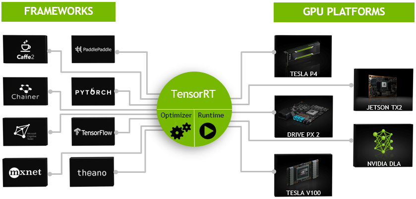
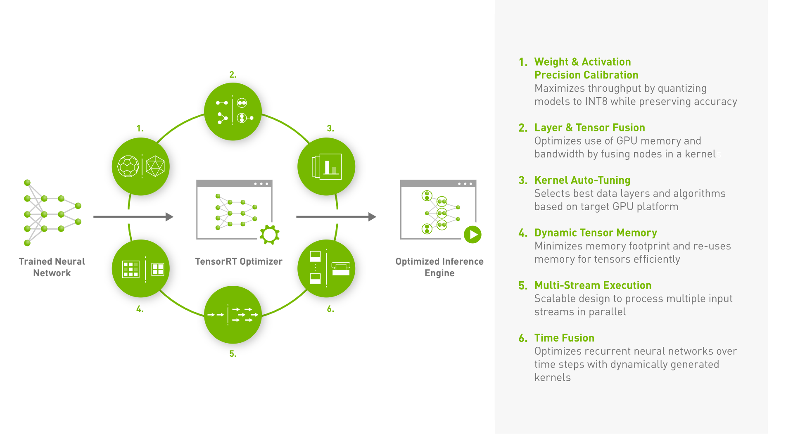

12.1 TensorRT 简介与安装
前言
本节将介绍TensorRT的基础概念，以及在windows和linux下进行安装及验证的方法，为后续正式学习TensorRT做好理论和环境的基础。
- github：https://github.com/NVIDIA/TensorRT
- 主页：https://developer.nvidia.com/tensorrt
- python接口文档：https://docs.nvidia.com/deeplearning/tensorrt/api/python_api/
- 安装文档： https://docs.nvidia.com/deeplearning/tensorrt/install-guide/index.html
- 开发者文档： https://docs.nvidia.com/deeplearning/tensorrt/developer-guide/index.html
- 各版本trt介绍：https://docs.nvidia.com/deeplearning/tensorrt/archives/index.html
TRT简介
TRT是Nvidia公司针对N卡推出的高性能深度学习推理框架，TRT采用c++编写底层库，并提供c++/python应用接口，实现了高吞吐、低时延的优点。TRT 应用量化、图优化、层融合等优化技术，同时利用高度优化的内核找到该模型的最快实现。
TRT是官方推理引擎，优化效果自然靠谱，因此使用TRT进行工程化部署已经成为主流方案。
下面介绍TRT工作原理，它与pytorch这样的训练框架之间存在什么差异？为什么它是弥补pytorch走上高性能工程化必不可少的工具？下面通过一幅图来说明。

TRT主要包含优化器和运行时库两部分：
- optimizer是进行模型表示的优化，例如，层融合、图优化、量化、kernel选择等操作，目的是为了找到模型在GPU上，运行时最优的表示形式以及方案（kernel选择），这里的kernel是具体某个算子的实现方法，例如卷积的实现就有很多，可以根据实现方式、算法、数据布局等进行挑选，优化器会根据网络结构、硬件配置和精度需求等因素，选择最适合当前场景的 kernel 进行推理计算，以获得最佳的性能。optimizer是在生产前做准备工作，获得最优方案，供runtime使用。
- runtime是运行时库，可以实现推理引擎创建、推理计算、引擎销毁等内容，是生产服务中使用的。到这里，就知道TRT会根据GPU特性、任务特性、用户自定义操作等，将pytorch模型转换为TRT 运行时库能读取的形式，简单粗暴理解就是pytorch模型转为TRT模型。
TRT模型文件(.plan或者.engine)是高度优化的模型表示形式，在真正使用时被Runtime所加载并使用，可以实现高性能推理。
由此可知，TRT可以高性能推理的重要环节是采用优化器优化，那么优化通常有哪些操作呢？

可以通过上图看到会包括6个主要部分：
- Weight & Activation Precision Calibration：权重和激活精度校准，目的是通过量化模型（float16, int8等）实现高吞吐量，以及低存储。
- Layer & Tensor Fusion：层和张量融合，这一步是优化 GPU 内存和带宽的使用，通过将多个节点融合成一个节点，从而减少计算和通信的开销。例如，卷积、BN、ReLU融合为一个操作算子，可以减少数据在 GPU 内存中的复制次数，从而提高推理性能。
- Kernel Auto-Tuning，内核自动调优，的是根据目标 GPU 平台的特性和硬件配置，选择最佳的计算内核和数据布局方式，以获得最佳的性能和精度。TensorRT 会根据模型的结构和运行时环境，自动选择最佳的计算内核和数据布局方式，从而最大化推理性能。 从这里表明，优化时的GPU型号要与生产时的GPU型号保持一致，尤其采用.engine来存储TRT模型时，不同设备之间不能使用。
- Dynamic Tensor Memory，动态张量内存，可以最小化模型的内存占用，通过动态地分配和释放张量内存，以最大程度地利用有限的 GPU 内存资源。
- Multi-Stream Execution，多流执行是通过并行执行多个输入流，提高模型的推理性能。TensorRT 可以将多个输入流分配到不同的 CUDA 流中，并行执行多个输入流，从而提高模型的并发性和吞吐量。 CUDA流可以理解为
- Time Fusion（时间融合） 这一步的主要目的是通过动态生成内核，优化循环神经网络（RNN）等模型在多个时间步骤中的计算过程。通过将多个时间步骤的计算合并成一个内核，可以减少数据在 GPU 内存中的复制次数，从而提高推理性能。 使用场景：需要优化循环神经网络等模型在多个时间步骤中的计算过程，适用于序列模型等有时间序列特征的深度学习模型。
PS：CUDA流的理解
CUDA流是CUDA编程中用于并行计算的一种抽象概念，是一组在GPU上并行执行的操作序列。CUDA流用于管理和调度GPU上的计算资源。每个CUDA流都有自己的计算资源，包括寄存器、共享内存、全局内存等，这些资源是独立的，不同流之间不会相互干扰。在执行CUDA程序时，GPU上的计算资源被分割成了若干个流，每个流可以独立地执行一组操作序列。CUDA流可以看作是一条命令流水线，其中的每个操作都是在GPU上并行执行的。
可以将CUDA流看作是一个GPU上的工厂生产线，流中的每个操作就像是生产线上的一个工人，每个工人都有自己的工作任务，按照一定的顺序进行工作。这样，GPU上的计算资源就可以同时处理多个任务，从而实现并行计算。
为什么叫流（stream），是可以将其理解为数据的流动。在CUDA编程中，数据可以从CPU到GPU，也可以从GPU到GPU，甚至可以在GPU内部进行数据流动。通过合理地利用CUDA流，可以将数据的流动和计算的流程进行有效地整合和优化，以获得更高的性能和效率。
Windows安装
接下来进行TRT的安装，将分windows和linux下，所有安装步骤参照官方文档进行：https://docs.nvidia.com/deeplearning/tensorrt/install-guide/index.html
建议采用docker镜像安装使用，可避免很多不必要的坑，若不采用docker的话，建议严格按照官方文档步骤进行。
额外需要注意的是cuda、cudnn版本要与TRT版本匹配，同时主要环境变量的设置，中间可能会存在各种报错，请自行网上搜索解决方案。
TensorRT可以通过多种方法安装，例如Debian or RPM packages, a Python wheel file, a tar file, or a zip file.
在这里先介绍Windows的安装，采用zip文件的形式。
第一步：在官网下载zip文件，TensorRT-8.6.0.12.Windows10.x86_64.cuda-11.8.zip
第二步：把zip解压到CUDA同级目录（位置无所谓，建议与CUDA放在一起，例如C:\Program Files\NVIDIA GPU Computing Toolkit\TensorRT-8.6.0.12），将TensorRT-8.6.0.12\lib下文件复制到CUDA安装目录/bin下面（C:\Program Files\NVIDIA GPU Computing Toolkit\CUDA\v11.3\bin）
第三步：安装python whl，在TensorRT-8.6.0.12\python下找到对应版本的whl，主要是看python版本。然后安装以下三个库
python.exe -m pip install tensorrt-*-cp3x-none-win_amd64.whl
python.exe -m pip install tensorrt_lean-*-cp3x-none-win_amd64.whl
python.exe -m pip install tensorrt_dispatch-*-cp3x-none-win_amd64.whl
第四步：pytorch与TensorFlow需要额外安装3个python包
python3 -m pip install graphsurgeon\graphsurgeon-0.4.6-py2.py3-none-any.whl
python3 -m pip install uff\uff-0.6.9-py2.py3-none-any.whl
python3 -m pip install onnx_graphsurgeon\onnx_graphsurgeon-0.3.12-py2.py3-none-any.whl
第五步：建议安装 cuda-python & pycuda
根据官方安装文档指引：https://docs.nvidia.com/deeplearning/tensorrt/install-guide/index.html
如果需要使用python-api，则需要安装cuda-python，安装方法：https://nvidia.github.io/cuda-python/install.html
pip install pycuda
pip install cuda-python
安装pycuda可能会遇到：提示缺少 c++构建工具
error: Microsoft Visual C++ 14.0 or greater is required. Get it with "Microsoft C++ Build Tools": https://visualstudio.microsoft.com/visual-cpp-build-tools/
下载一个vs_BuildTools.exe，然后安装生成工具即可。
Windows TRT验证
trtexec 运行模型
trtexec是tensorrt自带的命令行工具，可以进行TRT模型生成，以及推理耗时评估。
在windows下，首先需要将trtexec.exe所在文件夹添加到系统环境变量，这样在cmd中，trtexec指令才会被识别到。
接着打开cmd，运行以下命令，将onnx文件转换为tensorrt的engine文件，并且自动进行推理耗时评估。
其中，onnx文件可从chatper-11文件夹下获取。
trtexec --onnx=resnet50_bs_1.onnx --saveEngine=resnet50_bs_1.engine
经过30s左右详细日志输出，最底部有推理性能日志：
[06/13/2023-14:56:23] [I] === Performance summary ===
[06/13/2023-14:56:23] [I] Throughput: 503.749 qps
[06/13/2023-14:56:23] [I] Latency: min = 1.89886 ms, max = 2.85559 ms, mean = 1.92952 ms, median = 1.92126 ms, percentile(90%) = 1.93677 ms, percentile(95%) = 1.95227 ms, percentile(99%) = 2.20648 ms
[06/13/2023-14:56:23] [I] Enqueue Time: min = 0.288818 ms, max = 1.23926 ms, mean = 0.570478 ms, median = 0.669189 ms, percentile(90%) = 0.782898 ms, percentile(95%) = 0.83667 ms, percentile(99%) = 1.03223 ms
[06/13/2023-14:56:23] [I] H2D Latency: min = 0.0751953 ms, max = 0.138062 ms, mean = 0.0788889 ms, median = 0.0770264 ms, percentile(90%) = 0.0814819 ms, percentile(95%) = 0.0932617 ms, percentile(99%) = 0.111938 ms
[06/13/2023-14:56:23] [I] GPU Compute Time: min = 1.81738 ms, max = 2.7533 ms, mean = 1.8471 ms, median = 1.84009 ms, percentile(90%) = 1.85034 ms, percentile(95%) = 1.8606 ms, percentile(99%) = 2.11353 ms
[06/13/2023-14:56:23] [I] D2H Latency: min = 0.00317383 ms, max = 0.0183716 ms, mean = 0.0035316 ms, median = 0.00341797 ms, percentile(90%) = 0.00390625 ms, percentile(95%) = 0.00390625 ms, percentile(99%) = 0.00415039 ms
[06/13/2023-14:56:23] [I] Total Host Walltime: 3.00348 s
[06/13/2023-14:56:23] [I] Total GPU Compute Time: 2.79466 s
[06/13/2023-14:56:23] [W] * GPU compute time is unstable, with coefficient of variance = 3.29947%.
[06/13/2023-14:56:23] [W] If not already in use, locking GPU clock frequency or adding --useSpinWait may improve the stability.
[06/13/2023-14:56:23] [I] Explanations of the performance metrics are printed in the verbose logs.
[06/13/2023-14:56:23] [I]
&&&& PASSED TensorRT.trtexec [TensorRT v8600] # trtexec --onnx=resnet50_bs_1.onnx --saveEngine=resnet50_bs_1.engine
可看到，基于TRT引擎的resnet50，batchsize=1的模型，在推理效率上，吞吐量为503，平均时延为1.92ms。
可以对比onnxruntime的吞吐量，提高了86%的吞吐（11.2小节做了评估，bs=1时，吞吐量为270），时延减少了48%（3.7 --> 1.92 ms）
为了进一步对比，还可以执行batchsize=128时的resnet50，观察吞吐量与时延情况，具体如下表所示：
trtexec --onnx=resnet50_bs_128.onnx --saveEngine=resnet50_bs_128.engine
[06/13/2023-15:05:08] [I] === Performance summary ===
[06/13/2023-15:05:08] [I] Throughput: 9.05117 qps
[06/13/2023-15:05:08] [I] Latency: min = 109.778 ms, max = 111.595 ms, mean = 110.354 ms, median = 110.348 ms, percentile(90%) = 110.654 ms, percentile(95%) = 110.674 ms, percentile(99%) = 111.595 ms
[06/13/2023-15:05:08] [I] Enqueue Time: min = 0.542603 ms, max = 1.39661 ms, mean = 0.860929 ms, median = 0.815994 ms, percentile(90%) = 1.23169 ms, percentile(95%) = 1.28577 ms, percentile(99%) = 1.39661 ms
[06/13/2023-15:05:08] [I] H2D Latency: min = 9.49048 ms, max = 10.332 ms, mean = 9.63266 ms, median = 9.57568 ms, percentile(90%) = 9.7522 ms, percentile(95%) = 10.2017 ms, percentile(99%) = 10.332 ms
[06/13/2023-15:05:08] [I] GPU Compute Time: min = 100.16 ms, max = 101.197 ms, mean = 100.652 ms, median = 100.593 ms, percentile(90%) = 101.011 ms, percentile(95%) = 101.036 ms, percentile(99%) = 101.197 ms
[06/13/2023-15:05:08] [I] D2H Latency: min = 0.064209 ms, max = 0.114136 ms, mean = 0.0695243 ms, median = 0.0656738 ms, percentile(90%) = 0.083374 ms, percentile(95%) = 0.0861816 ms, percentile(99%) = 0.114136 ms
[06/13/2023-15:05:08] [I] Total Host Walltime: 3.204 s
[06/13/2023-15:05:08] [I] Total GPU Compute Time: 2.9189 s
[06/13/2023-15:05:08] [I] Explanations of the performance metrics are printed in the verbose logs.
[06/13/2023-15:05:08] [I]
&&&& PASSED TensorRT.trtexec [TensorRT v8600] # trtexec --onnx=resnet50_bs_128.onnx --saveEngine=resnet50_bs_128.engine
onnx和TRT的吞吐量、时延对比如下表所示，可以看到吞吐量有30-80%的提升，时延有20-50%左右的降低。
| 吞吐量 | 吞吐量 | 时延 | 时延 | |
|---|---|---|---|---|
| onnxruntime | trt | onnxruntime | trt | |
| bs = 1 | 270 | 503（↑86%） | 3.7 | 1.9(↓49%) |
| bs = 128 | 852 | 1158（↑36%） | 150.3 | 110(↓27%) |
日志信息中有很多意义内容，包括：
- Throughput：模型的推理吞吐量，以每秒推理数量（QPS）为单位。
- Latency：模型一次推理的延迟时间统计信息，包括最小值、最大值、平均值、中位数和百分位数（90%、95%和99%）。
- Enqueue Time：将数据传输到GPU的时间统计信息，
- H2D Latency：将主机数据传输到GPU的延迟时间统计信息，
- GPU Compute Time：模型在GPU上运行的计算时间统计信息
- D2H Latency：从GPU将数据传输回主机的延迟时间统计信息
- Total Host Walltime：模型推理的总时间，包括传输数据、计算和传输数据回主机的时间。
- Total GPU Compute Time：模型在GPU上的总计算时间。
Bug记录
安装TRT时，切记关注自己的cuda版本，要找到适配你cuda版本的TRT版本！
由于刚更换电脑，cuda安装了最新的v12.4， 一开始想安装TRT v8.6.1，发现报错：
[03/27/2024-22:34:24] [I] Loading standard plugins
[03/27/2024-22:34:24] [E] Uncaught exception detected: Unable to open library: nvinfer_plugin.dll
&&&& FAILED TensorRT.trtexec [TensorRT v8601] # trtexec --onnx=resnet50_bs_1.onnx --saveEngine=resnet50_bs_1.engine --tacticSources=-CUDNN
根本原因是 cuda-v12.4需要更高的TRT版本，最终安装的是TensorRT-10.0.0.6。
Linux 安装
linux的安装有多种途径，如果有docker环境，强烈建议使用docker拉取官方镜像，直接可以使用。
如果不用docker，可以采用deb（ubuntu）、tar（linux都可以）、rpm（Redhat/Centos），笔者在centos和ubuntu上尝试过以上三种方法，由于服务器环境不纯净，导致各种问题装上。因此建议大家有docker就用docker，没有docker的话可完全参照官方文档的步骤就可以了。
安装前准备-系统版本查看
Linux系统下，注意系统的发行版本是什么，Linux、Ubuntu、Centos/RedHat有着不同的安装包，这里需要一开始查看自己系统版本。
cat /etc/*-release
同时查看cuda版本以及cudnn版本
nvcc -V
# cudnn 8.0以前版本查看
cat /usr/local/cuda/include/cudnn.h | grep CUDNN_MAJOR -A 2
# cudnn 8.0以后版本查看
cat /usr/local/cuda/include/cudnn_version.h | grep CUDNN_MAJOR -A 2
这里安装的是ubuntu18.04, cuda11.6, cudnn8.9.2；
通过docker安装
https://catalog.ngc.nvidia.com/orgs/nvidia/containers/tensorrt
https://docs.nvidia.com/deeplearning/tensorrt/container-release-notes/index.html
https://catalog.ngc.nvidia.com/orgs/nvidia/containers/pytorch/tags(pytorch + trt的容器)
有了docker可以直接拉取镜像，在环境中使用对应的TRT
第一步：拉取镜像
docker pull nvcr.io/nvidia/tensorrt:23.04-py3
TRT的版本可以通过文档查找
23.04-py3表示2023年4月发布的镜像，该镜像环境是：
- Ubuntu 20.04
- Python3.8
- NVIDIA CUDA® 12.1.0
- NVIDIA cuBLAS 12.1.3
- NVIDIA cuDNN 8.9.0
- NVIDIA NCCL 2.17.1
第二步：启动镜像
docker run -it -d --name trt --gpus all -v /home/docker_volume:/mnt nvcr.io/nvidia/tensorrt:23.04-py3 /bin/bash
第三步：进入容器，查看trt版本
docker exec -it trt /bin/bash
dpkg -l | grep TensorRT
得到如下显示，表明安装成功，可以尝试使用trtexec和python进行TRT模型推理。
root@c3d8bfb1d917:/opt/tensorrt/bin# dpkg -l | grep TensorRT
ii libnvinfer-bin 8.5.1-1+cuda11.8 amd64 TensorRT binaries
ii libnvinfer-dev 8.5.1-1+cuda11.8 amd64 TensorRT development libraries and headers
ii libnvinfer-plugin-dev 8.5.1-1+cuda11.8 amd64 TensorRT plugin libraries and headers
ii libnvinfer-plugin8 8.5.1-1+cuda11.8 amd64 TensorRT plugin library
ii libnvinfer8 8.5.1-1+cuda11.8 amd64 TensorRT runtime libraries
ii libnvonnxparsers-dev 8.5.1-1+cuda11.8 amd64 TensorRT ONNX libraries
ii libnvonnxparsers8 8.5.1-1+cuda11.8 amd64 TensorRT ONNX libraries
ii libnvparsers-dev 8.5.1-1+cuda11.8 amd64 TensorRT parsers libraries
ii libnvparsers8 8.5.1-1+cuda11.8 amd64 TensorRT parsers libraries
ii tensorrt-dev 8.5.1.7-1+cuda11.8 amd64 Meta package for TensorRT development libraries
第四步：验证TRT
基于trtexec 运行模型。首先，编译trtexec：
cd /workspace/tensorrt/samples/trtexec
make
然后，添加环境变量：
export PATH=$PATH:/path/to/trtexec
export PATH=$PATH:/workspace/tensorrt/samples/trtexec
最后，将resnet50_bs_1.onnx文件放到服务器，执行命令：
trtexec --onnx=resnet50_bs_1.onnx --saveEngine=resnet50_bs_1.engine
最后得到如下输出：
[06/14/2023-07:18:37] [I] === Performance summary ===
[06/14/2023-07:18:37] [I] Throughput: 443.756 qps
[06/14/2023-07:18:37] [I] Latency: min = 2.27521 ms, max = 2.51807 ms, mean = 2.30483 ms, median = 2.3042 ms, percentile(90%) = 2.32056 ms, percentile(95%) = 2.32422 ms, percentile(99%) = 2.33069 ms
[06/14/2023-07:18:37] [I] Enqueue Time: min = 0.792969 ms, max = 1.42358 ms, mean = 0.966213 ms, median = 0.89917 ms, percentile(90%) = 1.28101 ms, percentile(95%) = 1.29688 ms, percentile(99%) = 1.34668 ms
[06/14/2023-07:18:37] [I] H2D Latency: min = 0.0510864 ms, max = 0.09021 ms, mean = 0.0603899 ms, median = 0.0601807 ms, percentile(90%) = 0.0654297 ms, percentile(95%) = 0.06604 ms, percentile(99%) = 0.0751953 ms
[06/14/2023-07:18:37] [I] GPU Compute Time: min = 2.22003 ms, max = 2.45557 ms, mean = 2.24015 ms, median = 2.24048 ms, percentile(90%) = 2.25073 ms, percentile(95%) = 2.25391 ms, percentile(99%) = 2.26099 ms
[06/14/2023-07:18:37] [I] D2H Latency: min = 0.00244141 ms, max = 0.0136719 ms, mean = 0.00428888 ms, median = 0.00305176 ms, percentile(90%) = 0.0114746 ms, percentile(95%) = 0.0126953 ms, percentile(99%) = 0.0133057 ms
[06/14/2023-07:18:37] [I] Total Host Walltime: 3.00616 s
[06/14/2023-07:18:37] [I] Total GPU Compute Time: 2.98836 s
[06/14/2023-07:18:37] [I] Explanations of the performance metrics are printed in the verbose logs.
[06/14/2023-07:18:37] [I]
&&&& PASSED TensorRT.trtexec [TensorRT v8601] # trtexec --onnx=resnet50_bs_1.onnx --saveEngine=resnet50_bs_1.engine
通过Deb包安装
Deb参考官网吧，这里安装最后失败了，所以推荐大家用docker安装，下面是作为记录。
第一步：在官网下载deb包。并安装
sudo dpkg -i nv-tensorrt-local-repo-${os}-${tag}_1.0-1_amd64.deb
sudo cp /var/nv-tensorrt-local-repo-${os}-${tag}/*-keyring.gpg /usr/share/keyrings/
sudo apt-get update
第二步：安装 tensorrt。
需要等待3-5分钟。
sudo apt-get install tensorrt
第三步：安装其它工具
sudo apt-get install python3-libnvinfer-lean
sudo apt-get install python3-libnvinfer-dispatch
python3 -m pip install numpy
sudo apt-get install python3-libnvinfer-dev
python3 -m pip install numpy onnx
sudo apt-get install onnx-graphsurgeon
第四步：验证安装
安装好后，可到/usr/src/tensorrt 查看安装目录。
dpkg-query -W tensorrt
第五步：编译trtexec
cd /usr/src/tensorrt/samples/trtexec
make
根据官方文档只需要make就可以获得trtexec，但是我的服务器的配置出了些问题，make时出现如下报错：
/usr/local/cuda/include/cuda_runtime_api.h:4219:65: error: 'cudaLaunchConfig_t' does not name a type; did you mean 'cudaFunction_t'?
extern __host__ cudaError_t CUDARTAPI cudaLaunchKernelExC(const cudaLaunchConfig_t *config, const void *func, void **args);
多种尝试未解决，后续将采用docker镜像来使用TRT，这里暂时放弃。
小结
本小节介绍了TensorRT的基础概念，知道了TRT中需要做优化和推理两个主要内容，其中的优化可以在API中或者是trtexec中进行，推理则提供了python和c++两种接口。在安装上，介绍了windows下和linux下的安装及验证，可以看到在吞吐和时延上，TRT比ONNX都有优势。
下一小节将详细介绍TRT的工作流程。